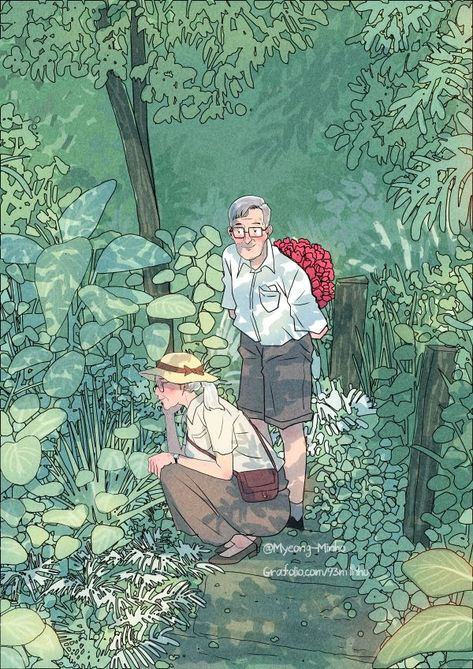

負責，這個詞，常常聽到，也常被討論。
有些人是責任扛太多，不僅要管好自己的事情，還一直牽掛管著身邊的人和他們的事；有些人則是遇到一點困難或挫折，就癱瘓不動了，
雙手一攤，等著別人來拯救。
在我學習不同的身心技法過程中，其中日本操体技法直接在它的哲學理論點明，每個人都要為自己負責，而別人不能取代的四件事：飲食、呼吸、動作和思想。
乍看之下，這四件事情理所當然地必須要自己負責，但仔細思考，其實，我們並不一定把這四件事情做好了。
第一、飲食
也許到了一定年齡之後，會開始注意飲食健康，但也有不少人，是長期隨便亂吃，只要吃飽就好，或是有些人因消化系統的問題，而不能好好的正常飲食，也有人為了體重或是身心疾病的影響，過度的吃或極力克制不吃；身體不是機器，只要吞下食物，好像有了機器的燃料，身體就應該要像機器一樣，正常運作，在飲食這部份，也許應該重新思索的是，你是怎麼吃、喝對待自己的身體？
第二、呼吸
無時無刻，我們都要呼吸，但，你注意到自己呼吸的品質了嗎？呼吸的品質影響著身體各部位的氧氣供應，生活中，有很多因素在影響著呼吸的品質，例如：壓力、情緒、生活的節奏、健康狀況，然而，你是否注意到這些因素，覺察呼吸的品質，好好地調整自己，還給身體一個好品質的呼吸呢？
第三、動作
在這裡「動作」不是指運動，而是任何一個身體的姿勢或是使用身體的習慣。使用身體的慣性和方式，長期下來會影響身體的健康，也會對我們的心裡和性格相互的形塑。比方說，習慣把一條腿翹起來再蜷曲勾住小腿而坐的人，要他不翹腳、雙腳平踩地面而坐，也許會讓他覺得很沒有安全感；相反地，習慣坐姿不翹腳，而且雙腿開開又兩腳平踩地面的人，讓他翹腳又蜷曲而坐，可能會讓他感到拘束而壓迫。
第四、思想
我們應該為自己腦袋中想的念頭，是正面或負面而負責，因為我們怎麼想，會影響我們怎麼看待生活中的人事物以及自己；同時，當我們怎麼想，我們就怎麼說，然後透過聽見自己所說的，來回饋強化我們的思想，因此正面思考的人，說出正面的語言，也就更強化他的正面思考。但，有很多情緒困擾或負面想法的當事人，經常告訴我，他們沒辦法控制腦袋的想法，負面的念頭總是不中斷地跳出來，再怎麼命令自己不要去想，也還是一直想。我只能幽默的說，既然你不能把腦袋和想法挖出來給我修理，只好一起來學方法，為自己腦袋中的思想負責吧！
在生活中，有其它抽象或事務性的層面來學習對外界的人事物負責，然而自己的身體是最直接的練習對象，你對自己的身體，負責了嗎？
